|
UE5 360 Stereo Panoramic Player 1.2.3
Create interactive Media Players and Virtual Tours for mono and stereo 360 panoramic images and videos in Unreal Engine 5.
|
Loading...
Searching...
No Matches
|
UE5 360 Stereo Panoramic Player 1.2.3
Create interactive Media Players and Virtual Tours for mono and stereo 360 panoramic images and videos in Unreal Engine 5.
|
Class APanoramicDirector is the high level actor to show and interact with a panoramic experience, complete with user navigation. A panoramic experience is composed of a set of stages. Each stage defines which panoramic media to present and how to navigate to other stages.
The transition between stages is automatically activated when the user stares at an hotspot. There are two types of hotspots: custom UMG widgets and areas defined by custom coloured masks. When the user stares at an hotspot, a viewfinder is shown to inform of the imminent navigation. The viewfinder can be customized choosing any UMG widget, or even disabled. Both the pause before activating the navigation and how long the user should stare at the hotspot can be customized. Transition effects (fading and cutoff) between stages can be customized too.
Read 'How-to' for common how-tos.
Integrating a panoramic player into your application is quite simple using the APanoramicDirector actor:
For more advanced usages not covered by APanoramicDirector, you can work directly with Panoramic Sphere.
To begin with the APanoramicDirector actor, open the Unreal Engine 5 Editor and create an empty level if you don't have one already.
You must import in your Unreal Engine 5 project all the panoramic media files (images and videos) you want to display. Please read the section Media Layout for details.
A UPanoramicStage is used to describe how to display a panoramic media and how the user can interact with it (including which other panoramic stages are reachable from this one).
To create a new UPanoramicStage asset: in the Content Browser, press the Add New button and then select Miscellaneous > Data Asset. Search for PanoramicStage and then click on Select. Choose a name for this stage and then press Enter to confirm.
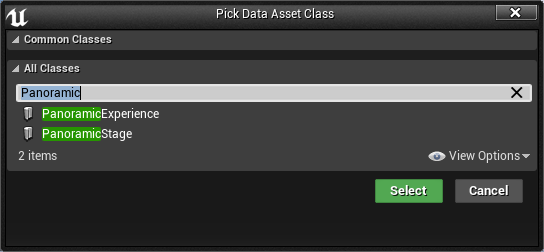
Double click on the newly create asset to open its Details panel, where you can customize all stage properties.
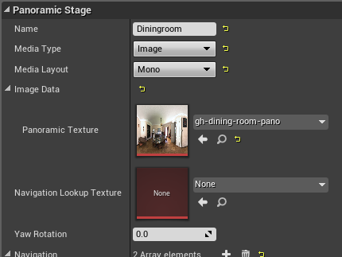
Here you must setup some important properties to control the media asset to be displayed when this stage will be activated:
Other properties control the set of interactive hotspots the user can interact with to navigate to other stages:
A UPanoramicExperience is used to describe and control the overall user experience.
To create a new UPanoramicExperience asset: in the Content Browser*press the *Add New button and then select Miscellaneous > Data Asset. Search for PanoramicExperience and then click on Select. Choose a name for this experience and then press Enter to confirm.
Double click on the newly created asset to open its Details panel, where you can customize the experience properties.
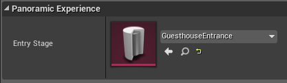
At this moment there's only one property to configure:
Search for the class PanoramicDirector in the Modes > Place panel and drag it into the level to create a new instance.

Select the newly placed instance (clicking on it in the editor viewport or through the World Outliner) to open its Details panel and configure its properties.
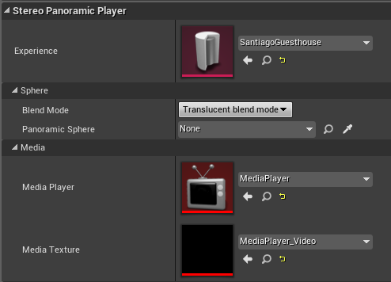
You must now set some required properties:
You can now press the PIE PLAY button and see the result in real-time.
Other properties of APanoramicDirector are explained below and allow you to customize how the user interact with the experience, how to navigate between stages and the effects to use for transitions.
For details about the Blend Mode option, please read 'Blend mode'.
If your experience has two or more stages, you can configure the navigation link between them and APanoramicDirector will take care of present and manage it for you. You can configure how and when navigation between stages takes place configuring the Customizing the user interaction.
A navigation link is configured in the panoramic stage of origin, specifying the destination and how to navigate to it. An empty destination will cause the end of the experience.
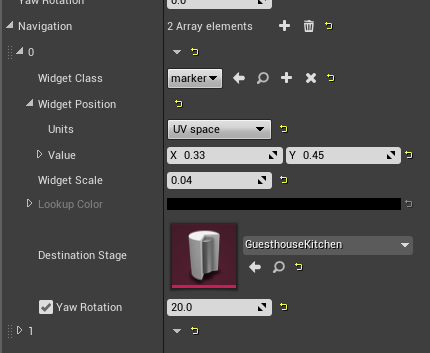
To add a navigation link:
The last step to configure navigation between stages is to define the interactive area the user will have to interact with to effectively activate the navigation. This interactive area can be defined in two ways:
This option allows you to place on screen an ordinary UE5 UMG Widget that the user can interact with to activate the navigation. The interactive area is defined by the size of the UMG Widget box.
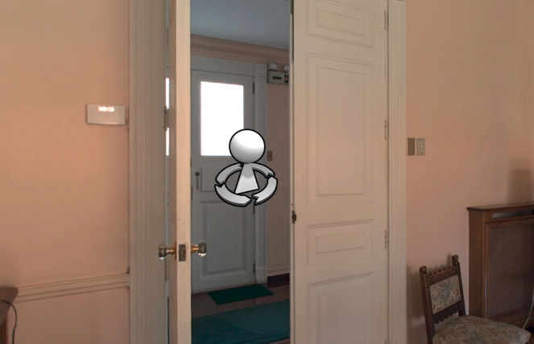
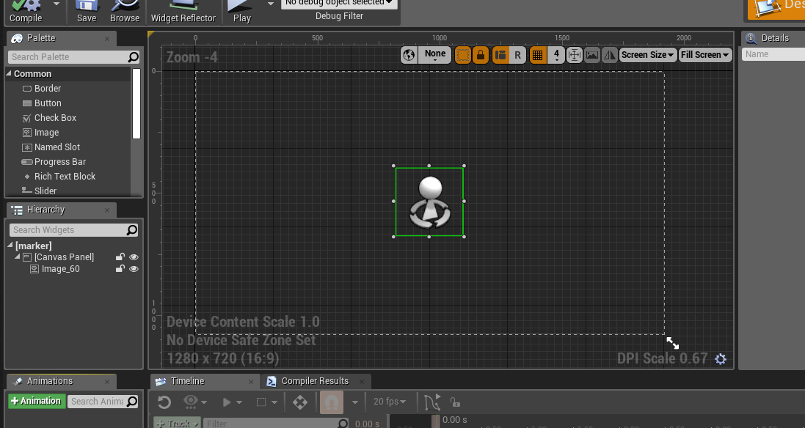
To configure a navigation link to use an UMG Widget:
You can customize how the user will interact with the widgets following the instructions in the section Customizing the user interaction.
This option allows you to defines arbitrary areas in the panoramic image with which the user can interact with.
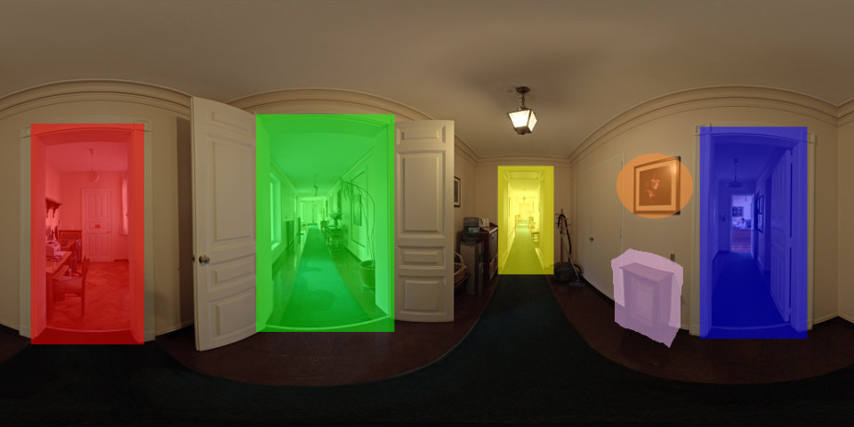
To use this navigation method you must:
You must create a texture with the following characteristics:
This is the Navigation Lookup Texture corresponding to the above example:
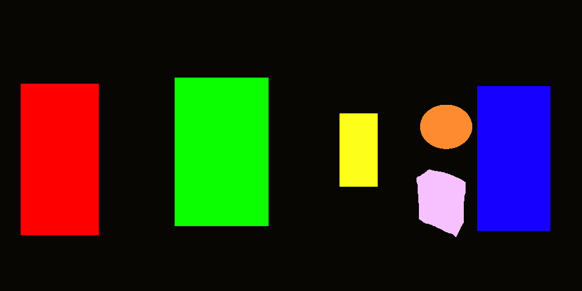
When you import this texture in Unreal Engine 5, you must:
If the navigation does't work as expected, double check you set the flags as described above.
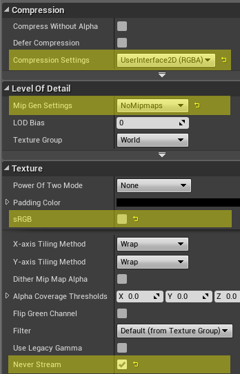
You have to configure the UPanoramicStage asset to use your Navigation Lookup Texture:
Then, for each navigation link you want to configure, you must set the correspoding color:
It's done! When the user will interact with the panoramic image (staring at a point or clicking on it), if the corresponding pixel color in the Navigation Lookup Texture will match one of the configured Lookup Color values, then the navigation will activate.
You can use the Interaction section of the APanoramicDirector to customize how the user will interact with the panoramic experience (mainly to navigate between configured stages, see section Navigation between stages). It has several orthogonal properties, that allow you to configure how to detect a possible interaction and when to activate it.
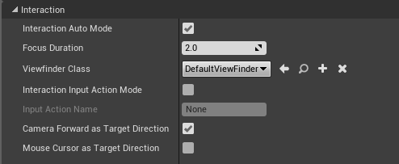
You can configure how to detect an interaction using the following properties:
To configure when an interaction will activate (after having been detected), set the following properties:
The APanoramicDirector actor supports several effects that can be customized:
By default both the effects are disabled and must be configured and turned on if desired.
The cutoff effect can be used when entering and exiting the panoramic experience to animate the transition between the surronding 3D environment and the panoramic sphere.
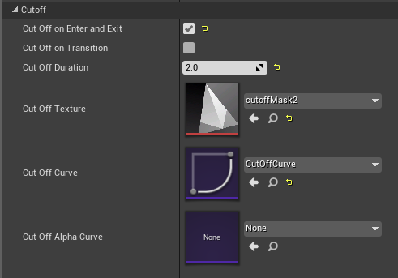
The cutoff effect renders some texels of the panoramic media as transparent, causing the 3D environment behind it to appear. In addition it can also alpha-blend the whole panoramic sphere over time. A texel is rendered as transparent if the corresponding sample in the Cutoff Texture (a greyscale image) has a value lower than a specified threshold. Animating this threshold value (using a custom UE5 Curve asset), we obtain the desired animated cutoff effect.
The Cutoff Curve defines the threshold value for a given instant:
Let d(t) be the threshold value at time t, the media texel at coordinates (u,v) is rendered as transparent if cutoff_texture(u,v) < d(t).
The Cutoff Duration defines the duration in seconds of the effect. Set it to 0 to disable the effect.
The Cutoff Alpha Curve, if set, controls the alpha channel of the effect (from 0 for transparent to 1 for opaque), allowing you to fade it over time.
Setting the relative flags, you can selectively enable/disable the effect:
The cross-fade effect can be used when navigating between panoramic stages. It first fades the origin panoramic media to the given Background Texture and then fades this texture to the destination panoramic media.
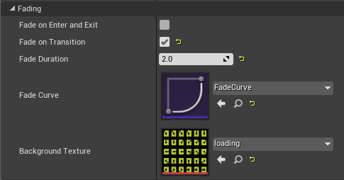
The Fade Curve defines the interpolation value for a given time:
Let iv(t) be the interpolation value at time t, the final color is equal to media_color * iv(t) + background_color * (1 - iv(t)).
The Fade Duration defines the duration in seconds of the effect. Set it to 0 to disable the effect.
Setting the relative flags, you can selectively enable/disable the effect: